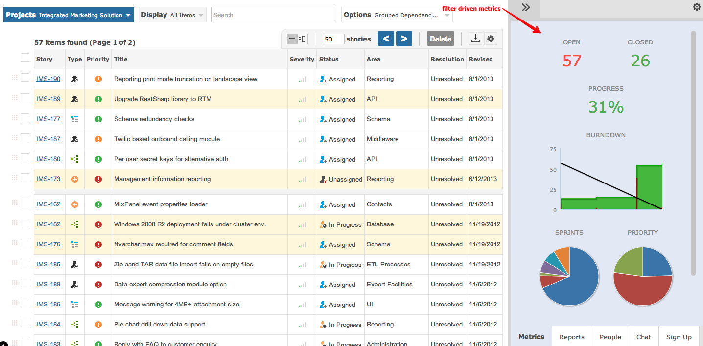

Within private or shared workspaces, the metrics pane provides various numbers that can be reported.

The numbers are based up the current Filter at the top of the page. You can select which metrics are displayed by clicking the cog icon top right of the metrics pane.